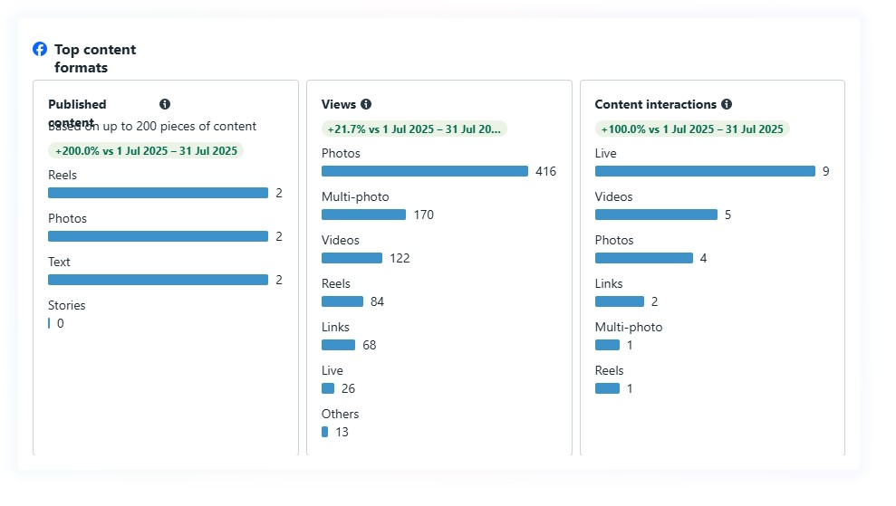
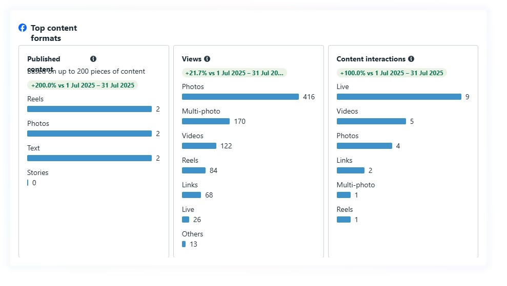

Hello, I'm
FAVOR KHAOYA
Marketing Strategist, MBA
Data-Driven | Creative | Results-Oriented
Let's Connect
Data-Driven | Creative | Results-Oriented
Let's ConnectI am a data-driven MBA graduate and marketing strategist with a passion for developing innovative campaigns that drive growth and engagement. I have 5 years experience in marketing, operations, partnerships, and stakeholder engagement. My work is defined by merging analytical rigor with marketing fluency to inform business transformation and growth.
2020 - Present
2023 - 2024


 



HubSpot | Salesforce | Meta Ads | Google Ads | Brandwatch | Hootsuite
Notion | Microsoft Suite | Google Suite | Visio | Slack
Power BI | Tableau | Google Analytics | Excel | SQL
Centre for Suicide Research & Intervention
Centre for Suicide Research & Intervention
Personal Pulse Articles
Truphie Njiru
Fanisi Creations
Fanisi Creations
Fanisi Creations
Fanisi Creations
Ready to elevate your brand? Let's connect and discuss how I can help you achieve your marketing goals.